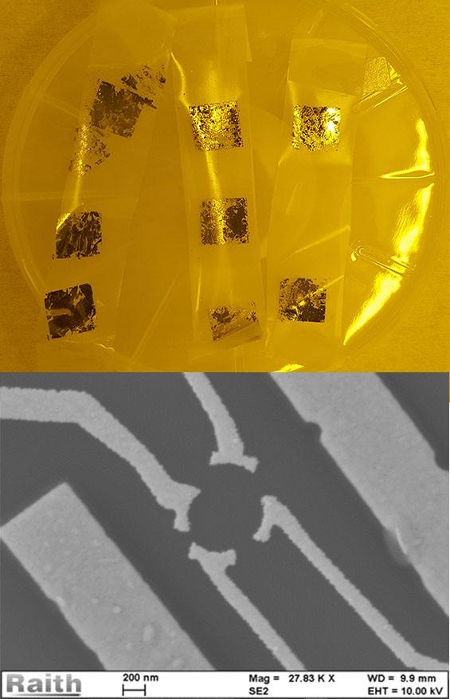
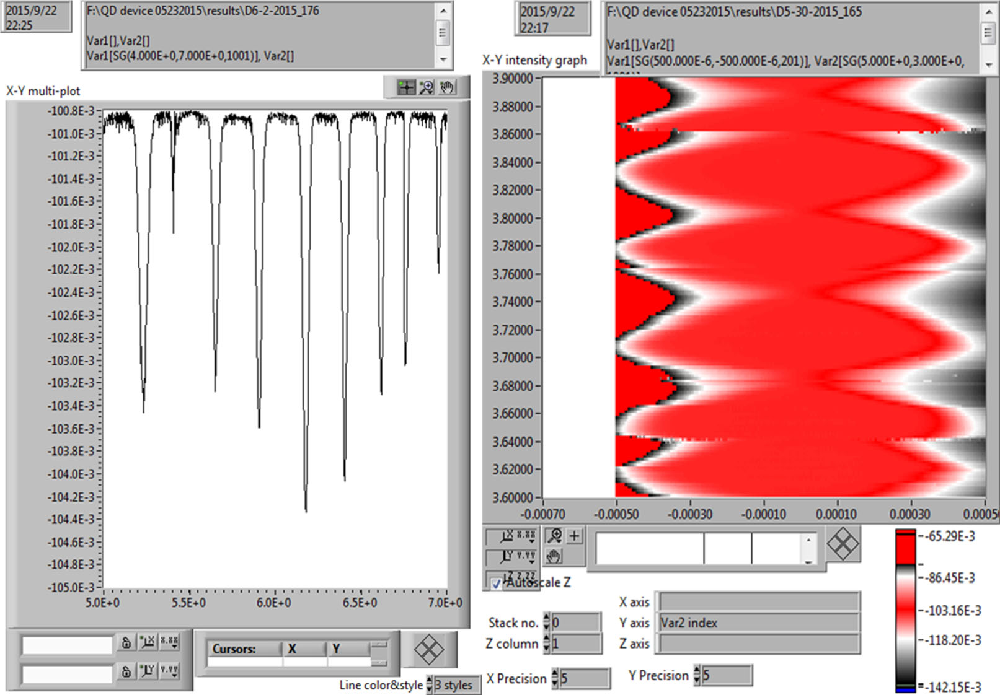
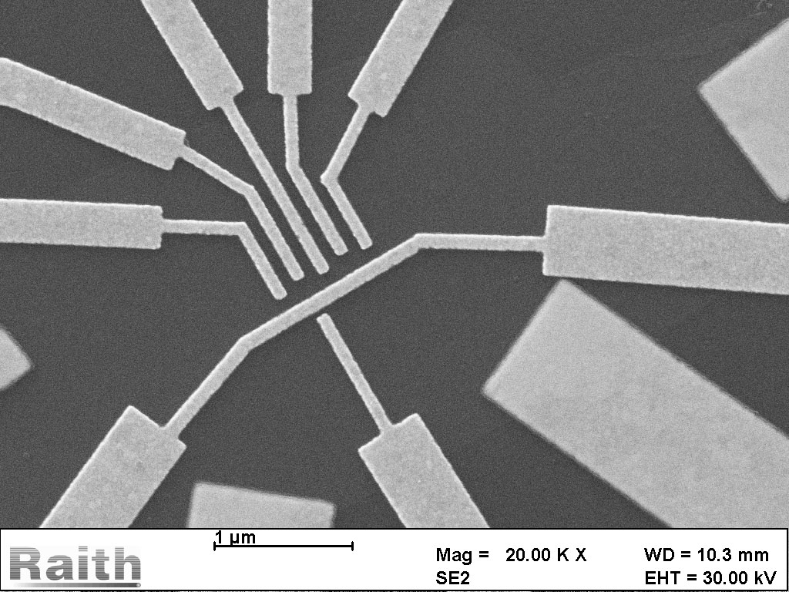
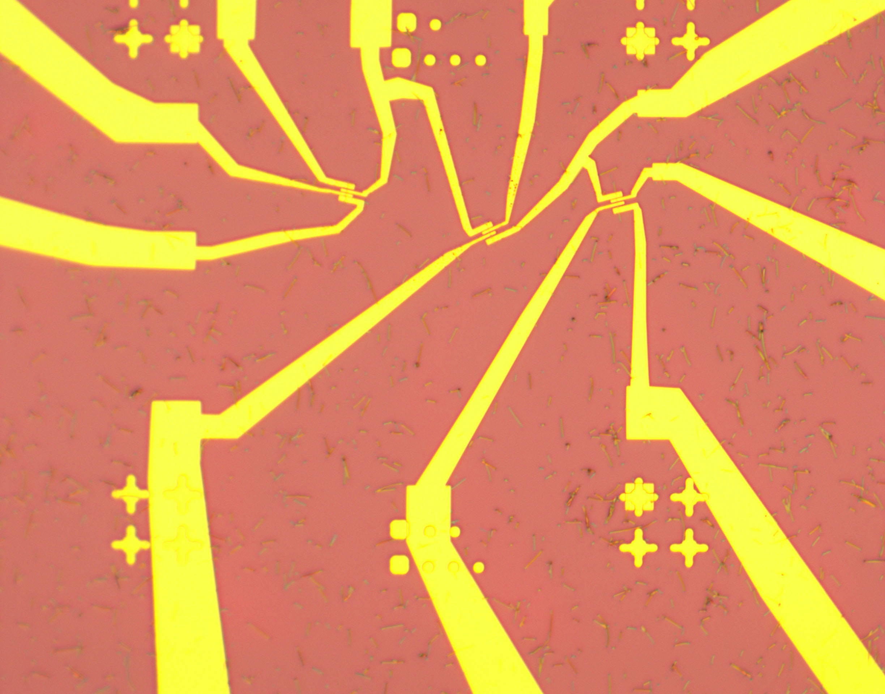
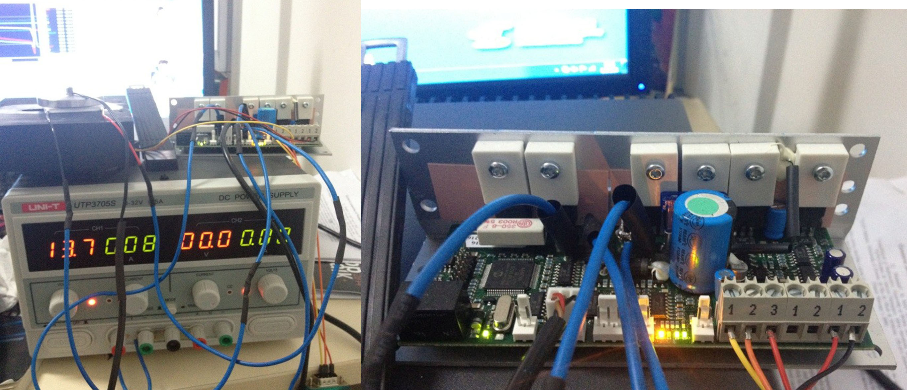
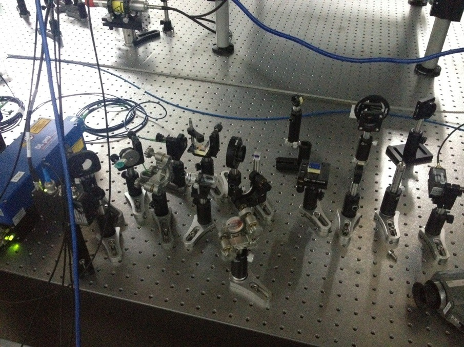
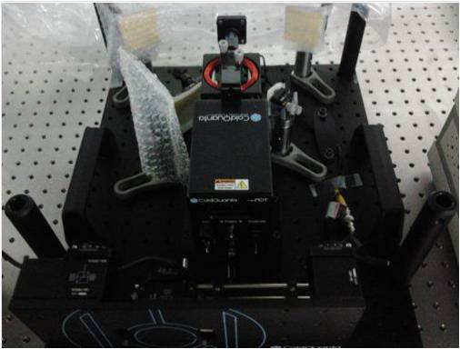

Gate-confined Quantum Dots in Graphene
Graphene quantum dot has drawn great attention since this material was first isolated from bulk graphite. It is more attractive because the zero nuclear spin in 12C atom leads to longer coherence time with no hyperfine interaction. Etching graphene into small islands is a commonly used strategy for the high potential barrier at the edge. In our experiment, however, we chose to make top-gate confined quantum dot in bilayer graphene instead to minimize the edge disorder.
In standard fabrication process, we use Scotch tape to mechanicaly exfoliate few-layer graphene from bulk graphite, and transfer it to a Si substrate with 300nm thermally grown SiO2. By analyzing the RGB contrast of optical micrographs taken at specific condition, we distinguish the layer number and pick up bilayer samples. After we bought a Raman Spectroscopy, we use the height ritio of G peak and 2D peak to distinguish instead.
We use a MATLAB program to convert the chosen flakes to bitmaps in the Raith-150 software, and desigh the source-drain pattern, followed by EBL, E-Beam Evaporation and lift-off process. After Ar/H2 annealling and deposition of dielectric layer(SiO2 or SiNx), we do a second EBL to define top gates. We load it into a dilution refrigerator for D.C. measurement after wire bonding.
Firstly, we scanned the back-gate voltage which adjust the Fermi level globally, and fixed it at the Dirac point where the conductance decreased to the minimum.
We scanned the voltage of four independent top gates to find a pinch-off region, then we scanned one gate in a small region and obtained the Coulomb peaks and Coulomb diamond.
However, there's no obervable orbital energy level or spin signal in the pattern. To improve the sample quality, we tried to make BN-Graphene-BN sandwich structure, but not get any useful data yet.
Paralleled with the trial for observation of orbital energy levels in single quantum dot, I tried to make double quantum dots (DQD) in bilayer graphene. However, in spite of the existence of asymmetric electric field, the energy gap was still so small (20~50meV) that we had to make the top-gate electrodes bolder. With the addition of Klein tunnelling, the confinement is too hard to be realized. So the size of the quantum dots cannot be as small as those made by etching, making the Zeeman splitting indistinguishable. We could only observe single energy well even in the double quantum dots.

Inspired by recent works of C.Marcus and L.Dicarlo, Luming suggested the Superconductor-Nanowire-Superconductor hybrid qubit to be a potential project of our lab. While before we could actually get usable device, we have to solve the problem of contact between the nanowire and the electrodes. The InAs nanowires we use were grown in IQC (Waterloo) by MOCVCD. To protect it from oxidization, a shell of InAsGa was in situ grown around the core. We need to etch away the shell and be quick to load the chip into sputtter. Any error in the etching procedure could cause the contact non-ohmic, and result in a low yield.
I made some ordinary source-drain contact to test the transparency of nanowire. The transfer and alignment technique are same with graphene.
B.Sc. Thesis: Quantum Memory with Cold Atoms (87Rb)
Since 2001, Duan-Lukin-Cirac-Zoller raised the idea of long distance quantum communication protocol based on linear optics and atoms ensemble, more and more groups put their hearts into quantum memory and quantum repeater. Ultra-cold atoms such as 87Rb have been widely investigated to store quantum information for its small dipole moment, which leads to weak interaction with environment and a longer coherence time.
Experiment of quantum memory consists of two process: writing and reading. In the reading process, the single signal photon, or we call the idler photon, is easy to be submerged into the strong reading pulse. While I was doing my B.Sc. thesis research in Luming Duan's lab, I designed a Fabry-Pérot cavity as a laser filter to improve the signal of idler photons. Besides, I used a PC board to control a temperature controller via a PID feedback loop, thereby to realize constant temperature inside the cavity.
I built a optical system to get the saturated absorption spectrum of (87Rb) atoms ensemble. The laser was split by a 4% refelction beam splitter. The weak probe beam propagated opposite to the strong pump beam. I used the Digilock Module of laser to sweep the frequency. Due to the Doppler effect, only when the laser was on resonance with the atoms, the probe beam would not be absorbed by the zero-speed atoms. Then I observed a peak at which the absorption of the probe beam downs to minimum. The laser was locked on that frequency for future experiment. It could be used as the strong pump laser, or a writing beam.
To test the system of quantum memory, we bought a small commercial Magneto-Optical Trap (MOT). I participated in set up this MOT. It was consisted by a cavity of Rb vapour and six mirrors in different direction. A laser beam was split into six and slowed down the atoms by absorbing photons from specific directions and scattering randomly, so called the effect of Doppler Cooling or Zeeman Slower.
These works were described detailedly in my B.Sc. Thesis (supervised by Porf.Luminmg Duan):
Laser Filter based on F-P Cavity in Quantum Memory with Cold Atoms
Multi-photon Entanglement
Photons are popular among both theorists and experimentalists for its low noise, namely clear, and many quantum algorithms have been demonstrated in photonic system. Commonly we use Spontaneous Parametric Down-conversion (SPDC) in a BBO crystal to generate entangled photon pairs. Multi-photon entanglement is generated by Bell State Measurement (BSM) between photons from different pairs.
Motivated by the great works completed by Prof.Jianwei Pan and his colleagues, I joined Prof.Chaoyang Lu's group in my sophomore year in University of Science and Technology of China (USTC). I learned a lot of ideas about quantum information and photonics there, and got a chance to participate in building a system of entangled photon pairs generated by SPDC.